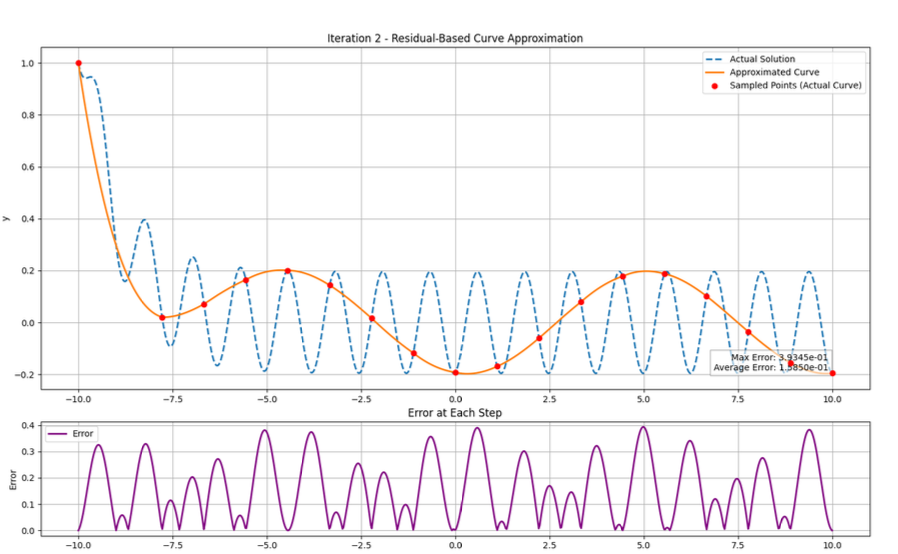
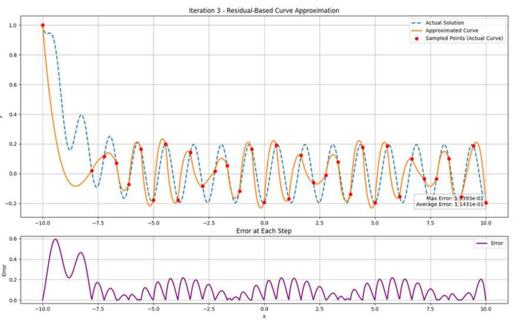
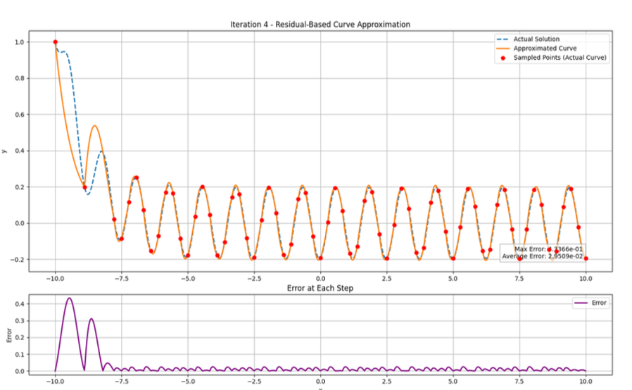
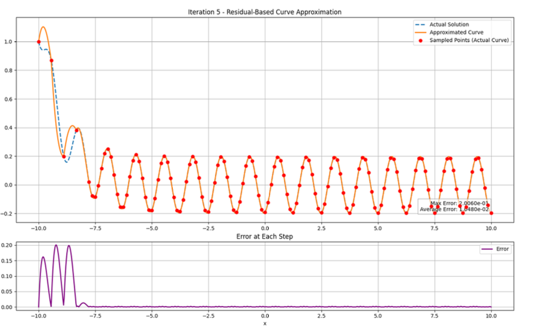
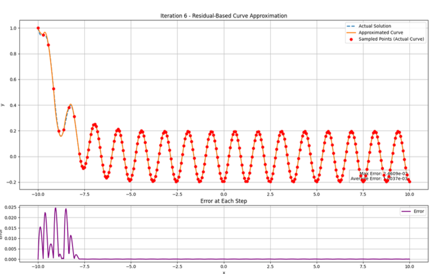
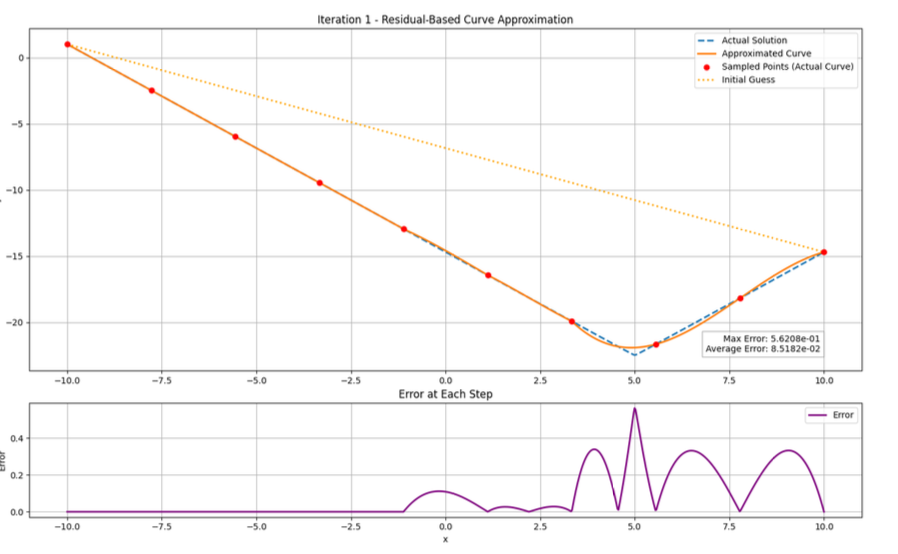
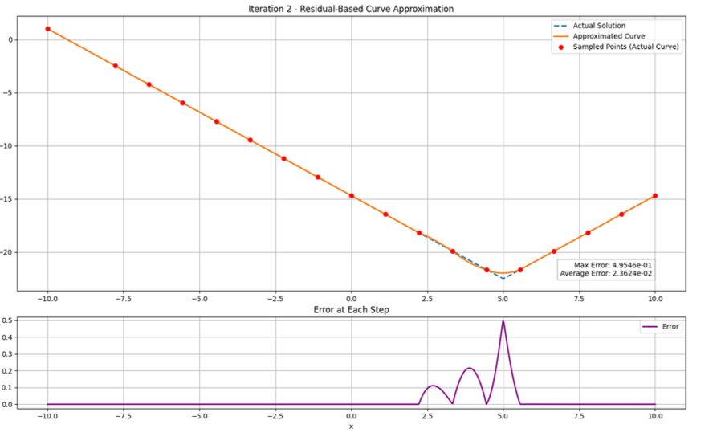
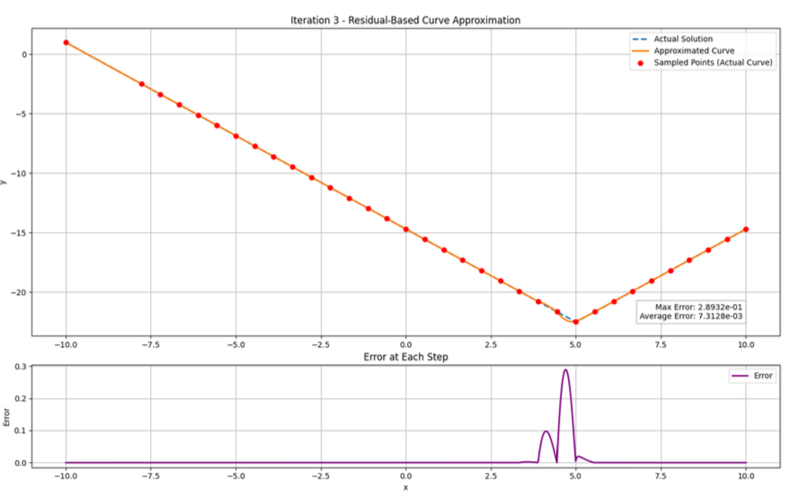
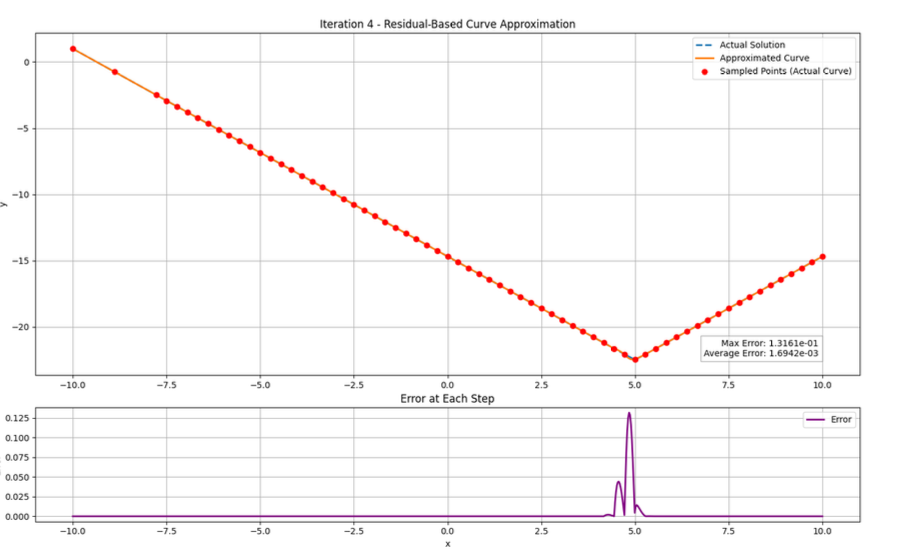

Recursive Polynomial Adaptive Sampling
RPAS ODE Solver. Hudson Miller.
Introduction
This model optimizes curve-fitting by combining polynomial fitting, adaptive sampling, and recursive iterating. The goal is to use as little compute as possible to achieve only the necessary level of accuracy when solving ordinary differential equations. This essentially means reaching “convergence” in as few iterations as possible. The required level of accuracy to achieve convergence is set by the user, as they choose the maximum error for the model to keep iterating. This model is unique because it only continues to sample in regions where there are high residuals. This allows it to not only be efficient with compute, but efficient with information. The model only samples new points when it is necessary, hence making it very useful for large datasets. The principles behind this model have broad implications beyond just differential equations such as stock market trend analysis, derivatives trading, and the optimization of neural nets by providing an efficient way to minimize loss functions.
Iteration 1: Initial Approximation
The blue dashed line is the curve we are trying to approximate, and the solid orange line is our approximation. The solver starts with an initial linear “guess,” which is simply the dashed orange line that goes between the first and last sampled points. Red points represent the sampled points used to approximate the curve, and the residual-based correction begins from here. The purple plot at the bottom is the error plot. A polynomial of nth degree is fitted through the residual plot (not shown), and its values are subtracted from the initial guess function. This process is repeated with each iteration. The degree of the polynomial is a parameter that can be adjusted by the user before the first iteration. Here, polynomials of degree 3 are used. In the future, parameters could be added to dynamically change the degree of the polynomial. The differential equation we are solving in this case is:
dy/dx = sin(5x) − y

Iteration 2: Improved Approximation
The solver refines the curve by correcting the first iteration using the residuals. The approximation aligns more closely with the true solution. Additional points are adaptively sampled where residuals are high. “High” is defined as a user-adjustable multiple of the maximum error. If a residual is abnormally high, more points near that residual are sampled. These points are simply midpoints between already-sampled points.

Iteration 3: Adding Points for Higher Accuracy
The solver continues refining the approximation by sampling additional points, improving accuracy further.

Iteration 4: Significant Error Reduction
By this iteration, the approximated curve (orange solid line) closely matches the actual solution. Remaining error is concentrated in regions of high oscillation. An important note: another sampling parameter ensures proper spacing between points. If the distance between two sample points is greater than a user-defined multiple of the average distance between sample points, a new point is added at the midpoint of the points that are too far apart. For example, this occurs in the second-leftmost region of the graph. This point was not added because of high error but rather due to this spacing parameter.

Iteration 5: Near Convergence
The curve is nearly indistinguishable from the actual solution. Sampling focuses on resolving residuals in areas with remaining errors, as indicated by the low error values.

Iteration 6: Convergence Achieved
The solver achieves convergence, where the maximum error and average error are within the specified thresholds. These thresholds are user-defined and situational. While average error is included here as a parameter for testing convergence, this metric would not appear in real use because it requires solving the function at every point.

Second Example: Sharp-Feature ODE
Here is another example, this time with a sharp-feature ODE. The equation is:
dy/dx = arctan(100(x − 5))
Iteration 1

Iteration 2

Iteration 3

Iteration 4
